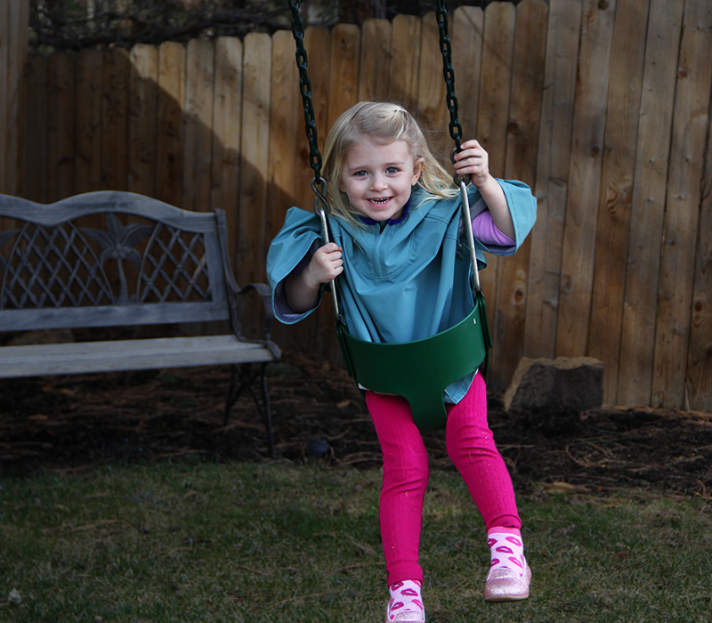
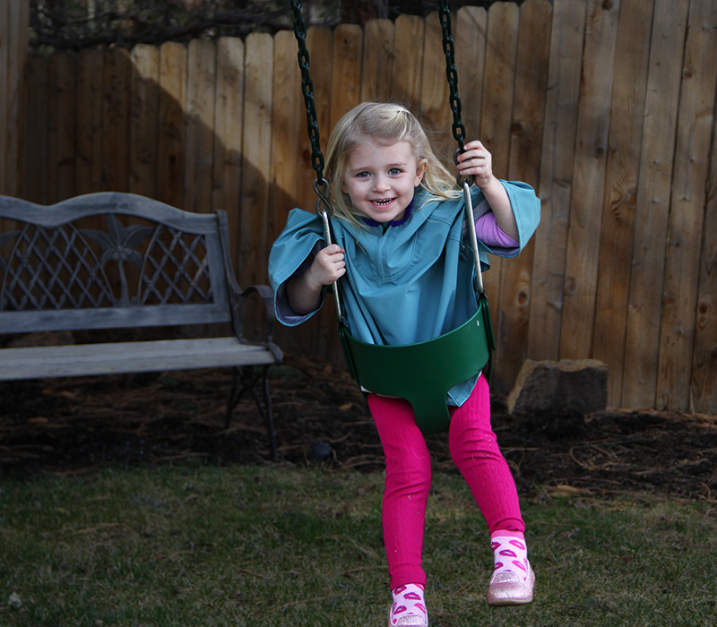

Thank you for visiting Newport Kidsport!
We are a children’s clothing company, fueled by local community, simple design and demanding Northwest weather.
In 1988, our company was started in a living room in Portland, Oregon. After the birth of her first son, Josephine Newport rented sewing machine and gave herself a week to find a solution to one simple problem: fussy children’s clothing. Josephine came up with a few products, one of which, the beloved baby cape continues to be a best-seller.
Baby in arms, Josie brought the baby cape into Portland stores including Young Land, Hannah Anderson and REI, to her surprise everyone was interested, and her first orders were made ad Josephine realized she would have to buy her own sewing machine.
From that moment on, what started as a simple, functional baby cape, started a company that grew to be a leading manufacturer of Children’s clothing.
From the first orders of the baby cape in 1988 to 2005 Newport Kidsport grew into a leading manufacturer of children’s clothing. Although the company expanded from a one-woman production to a world-wide manufacturer, the central goals and roots of the company stayed true, producing clothing that was simple, functional and long-lasting that was based and made in the Northwest.
During those 17 years, Josephine, now a mother of three, along with others, continued to design and produce their products, collaborating with other leading children’s companies and developing products that stayed true to Josephine’s original goal.
In 2005 production was put on pause, allowing Josephine to return to school to pursue a bachelor’s degree, care for her three children and new grandchild and to prepare for a reintroduction of Newport Kidsport. 10 years later, the time has come!
10 years later we are proud to be reintroducing Newport Kidsport, continuing to offer children clothing that is simple, functional and long-lasting while incorporating sustainable materials and Northwest-local manufacturing.
This Spring, our original item that started Newport Kidsport, the baby cape, along with three other tried and true pieces are available online and at specific locations.